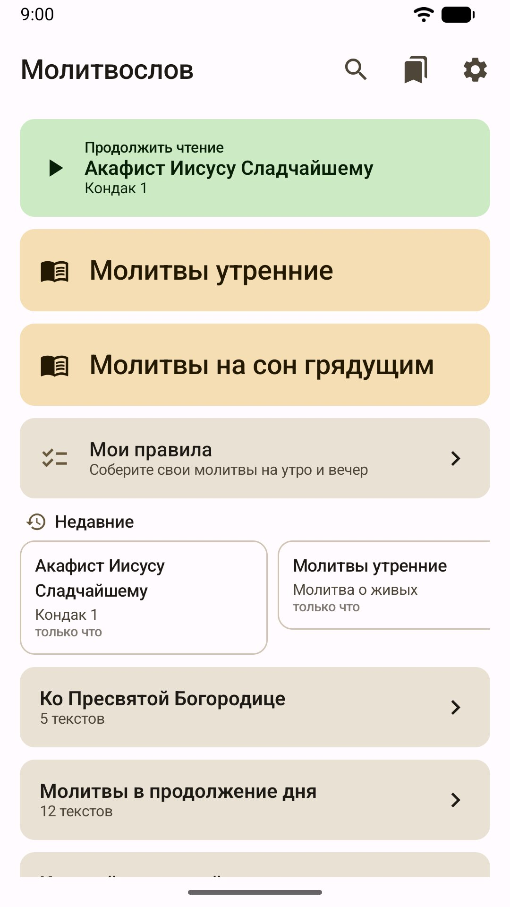
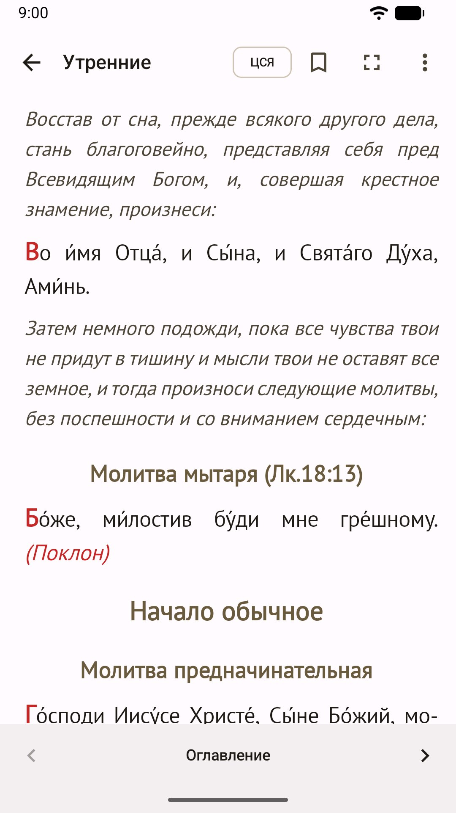
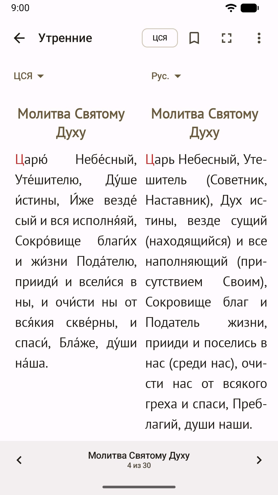
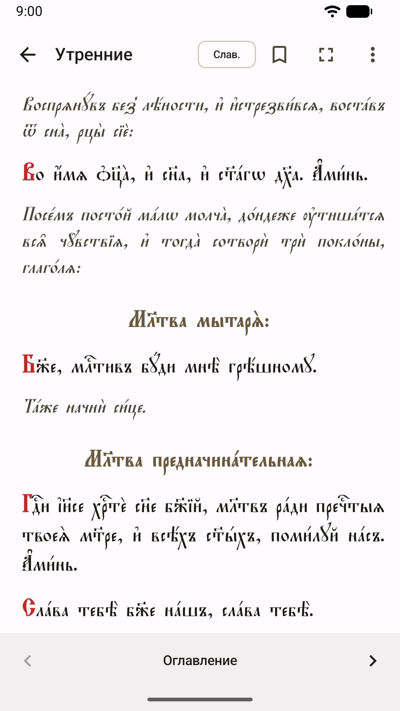
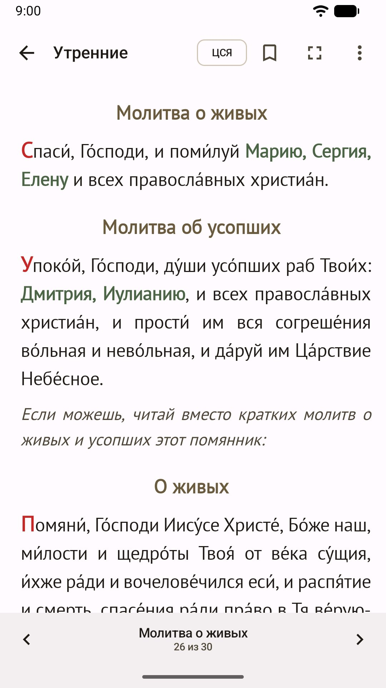
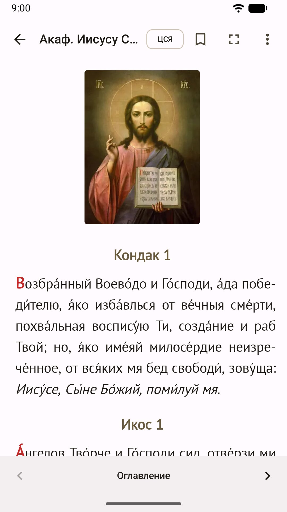
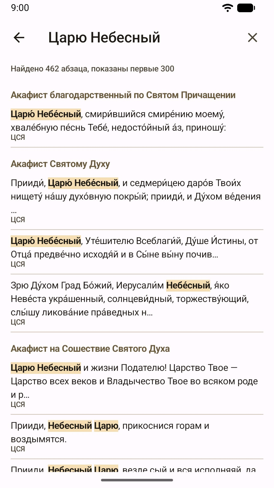
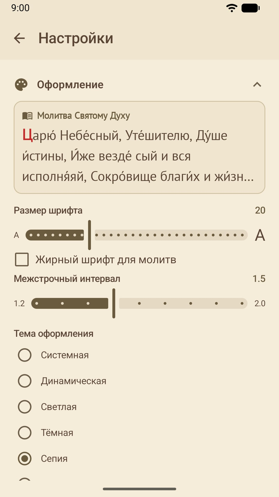

Утреннее и вечернее правило, акафисты и молитвы на всякую нужду — больше тысячи текстов в спокойном оформлении. Работает без интернета, без рекламы и без регистрации.
Скачать APKВерсия 1.0.0 · Android 8.0+
Утренние молитвы и молитвы на сон грядущим — на церковнославянском языке с ударениями, с русским переводом и славянским шрифтом.
От Пасхи до Троицы молитвы меняются сами: «Христос воскресе» вместо «Царю Небесный», «Ангел вопияше» вместо «Достойно есть», а на Светлой седмице — напоминание о пасхальных часах.
Соберите своё утреннее и вечернее правило из любых молитв — начните с готового шаблона или с чистого листа.
Имена о здравии и об упокоении встают прямо в текст утренних молитв. Молитвы — в мужской или женской форме: «грешный» или «грешная».
Господу, праздникам, Пресвятой Богородице и пред Её иконами, святым. Во многих — икона в начале текста.
Последование, три канона и благодарственные молитвы по Святом Причащении.
Молитвы Пресвятой Богородице, Ангелам и святым, в продолжение дня и на разные случаи жизни; краткий домашний часослов; тропари, кондаки и величания; Великий канон, Пасха, поминовение усопших.
В акафистах, тропарях и молитвах святым — икона в начале текста. Нажмите на неё, чтобы рассмотреть на весь экран.
Церковнославянский текст и русский перевод в две колонки. Толкования и примечания — там, где они есть.
Один поиск по всем текстам. Находит нужное, даже если набрали без ударений и титл.
Закладки и продолжение с того места, где остановились. Страницы листаются одним касанием, экран не гаснет, есть полноэкранный режим.
Семь тем: светлая, тёмная, сепия, AMOLED, тема под обои телефона, системная и своя. Семь шрифтов, размер букв, межстрочный интервал, переносы по слогам.







